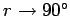

Inhalt Index DeskTop Bronstein

 Geometrie Sphärische Trigonometrie Berechnung sphärischer Dreiecke Kleinkreis
Geometrie Sphärische Trigonometrie Berechnung sphärischer Dreiecke Kleinkreis


Als Beschreibungsparameter lassen sich entweder M und r oder der nordpolnächste Kleinkreispunkt  und r verwenden.
und r verwenden.

Ist der laufende Punkt auf dem Kleinkreis  so ergibt sich nach dem Seitenkosinussatz gemäß Abbildung die Kleinkreisgleichung
so ergibt sich nach dem Seitenkosinussatz gemäß Abbildung die Kleinkreisgleichung
Daraus erhält man wegen und :
| Beispiel A |
|
Für ergeben sich aus (3.240a) wegen Breitenkreise. |
| Beispiel B |
|
Für  ergeben sich aus (3.240b) Orthodromen. |